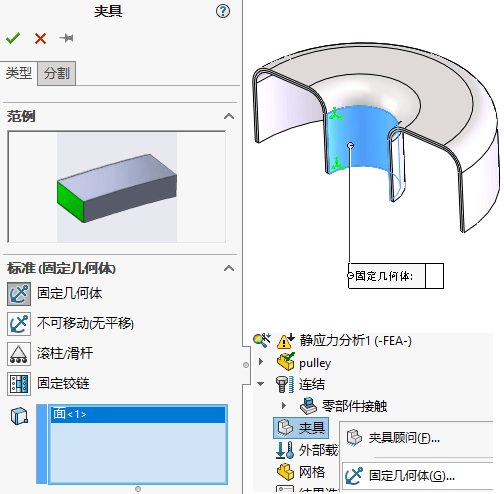
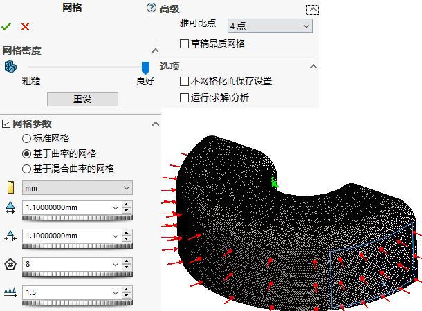
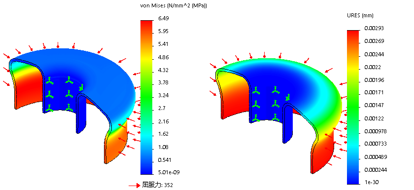

Simulation-壳单元
本章的带轮算例向用户介绍了壳单元，并使用户熟悉了壳单元的属性，比如壳单元厚度和方向，还介绍了使用中面的壳网格建模技术，并用来创建有限元模型。
- 实体单元：计算速度慢；结果精度高；
- 壳体单元：计算速度慢；结果精度高；
实体分析
新建算例
模型里有无关曲面，会影响实体网格划分，我们先将其“不包括在分析中”。
夹具
对称夹具
载荷
网格
运行
厚度方向上只有一个单元，而高品质网格需要至少两层单元
细化网格
在前面章节里，我们知道通过细化网格可以准确计算结果，但是代价是计算时长的增加。我们可以尝试复制一个新算例，将网格进行细化来验证应力结果。
复制算例

细化网格
运行
计算结果变化不大，说明前面的结果也是可以参考的。
壳单元
细化网格是一种处理计算准确性的方法，不过计算时长会增加。而对于这类薄片模型，我们其实还可以使用Simulation里的”壳单元“进行分析。该方法可以优化相同大小网格划分的计算时长。
中面特征
在用”壳单元“分析前，我们先在薄片实体上制作【中面】特征。这个中面可以用来作为”壳单元“的选择。
特征会在模型实体中间生成曲面，该曲面后续可以使用作壳单元的选择对象使用。
新建算例
把实体“不包括在分析中”
定义壳单元
右键中面曲面【编辑定义】
定义壳单元的类型、厚度、方向，在模型里你也可以看到预览的效果。

夹具
对称夹具
曲面侧边是边线，直接选择边线进行对称识别即可。
载荷
网格

其他网格按默认即可，点击【创建网格】，选择【网格参考-基于曲率的网格】保持默认设置并创建高品质网格。
壳单元的网格是带有颜色区分的：保证里外颜色均匀，是进行正确后处理的前提条件
- 壳体底面是橙色；
- 壳体顶面是灰色；
壳单元网格划分的内外面颜色，可在【工具-Simulation选项-系统选项-普通】里“网格颜色”设置。
若出现另外面（法向）方向不适合，可以右键【网格-反转壳体单元】更改网格方向，壳单元对齐（本例中，模型已是正常对齐的状态，这一步可以跳过）

如果你需要查看薄片模型从实际厚度效果，你可以右键【网格-在3D中渲染抽壳厚度】显示壳体厚度
运行
壳体上部
壳体下部（靠下）
总结
创建壳单元需要有曲面作为选择，当然，钣金特征也可以自动划分为壳网格。
着重讲解了网格是否够用的概念，并对壳单元和实体单元模型作了比较。如果实体网格足够精细，那么实体网格产生的结果精度比壳单元产生的要稍高一些。然而，这也可能会导致难以处理的求解规模的提升。
实体单元结果
壳单元结果
其他
壳单元类型
细壳
粗壳
壳单元应力类型
上视：顶面总应力（折弯与膜片）。对于复合壳体，上指复合选项下层数内选定层的顶面。
下：底面总应力（折弯与膜片）。对于复合壳体，下指复合选项下面层数中选定层的底面。
膜片：膜片应力分量
折弯：折弯应力分量